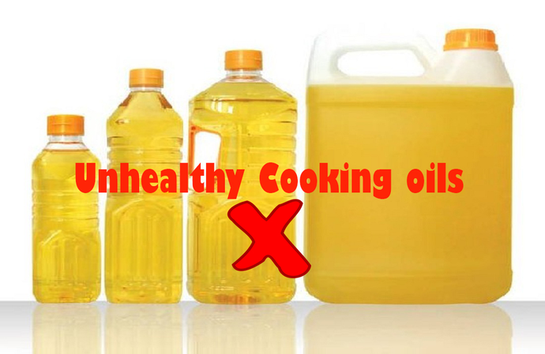
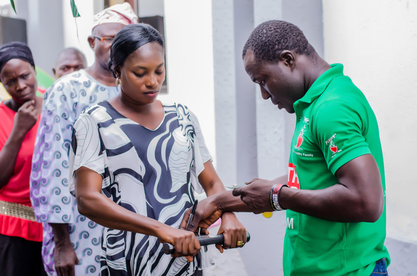

About Us
Power Oil - Quest to keep you healthy
Before Power Oil entered the Nigerian market, the level of consciousness on the unhygienic nature of unbranded vegetable cooking oil was significantly low, less focus was placed on the ill health effect of its consumption. People would buy it just because it was cheap paying little attention to other important health factors. But then, it had become like a habit being passed on from generations.
The general perception was that packaged oil which was considered to be healthier, was unaffordable and only meant for the rich within the society. This saw the introduction of Power Oil in a sachet which was sold for N50 amongst other variant sizes. The proposition was not only affordability but also the healthy choice with “Zero Cholesterol”, “Zero Trans-fat” which was first of its kind to be introduced into the Nigerian Market. Nigerians saw the value in this and gradually began to make a gradual switch to the affordable healthy choice.
Mission
We understand the concerns of every mother who strives to provide good and healthy nutrition for her family, we aspire to empower her with pure and healthy products she can trust and depend on.
| 
By creating awareness about unhealthy oil: Through our partnership with the Nigerian Heart Foundation, we undertake many activities like awareness drives, digital campaigns, etc. to inform the masses about the probable adverse effects on health of using unbranded oil. We also inform & educate them about benefits of healthier lifestyle habits such as regular exercise, eating healthy, etc. |

By educating people about the risks they face: Our health drive initiative involves our representatives going from house to house, recording BMI of the consumers and telling them about the health risks associated with obesity. They demonstrate how unhealthy oil can lead to heart blockages and strokes. Apart from these, we organize seminars for mothers to help them make an informed choice about their families’ dietary intake. |
|
By helping people take action: We organize Annual Health Camps, providing a platform for free counseling with the doctors. Doctors provide prescriptions based on patients’ health conditions. |
Encouraging Healthy lifestyle: In its bid to encourage a healthy lifestyle amongst Nigerians, Power Oil organizes many events like Walk Heart-On, etc. |
Nigeria's No.1 cooking oil brand - Power oil is known for its health benefits. It is triple refined, has NO CHOLESTEROL & is absolutely free of transfat!